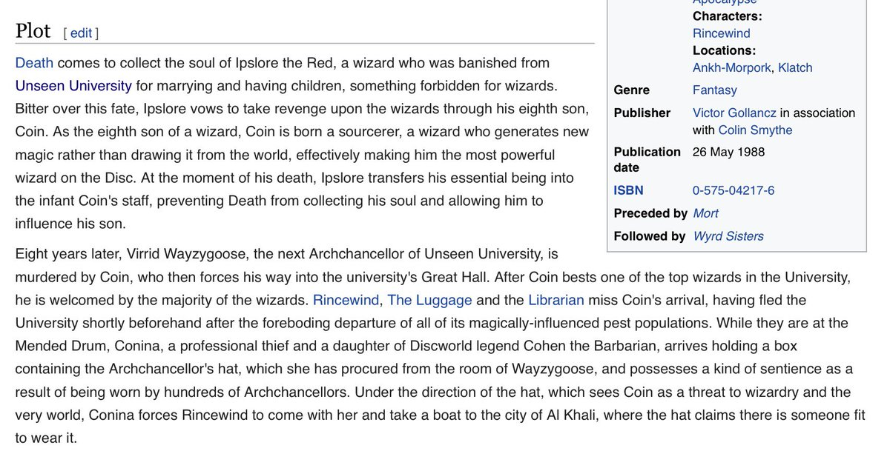

92. Against Chosen Ones
April 27, 2022
In which I read Musk's Twitter takeover through Terry Pratchett's Sourcery — where a Chosen One wizard breaks the balance of power — and extract Discworld's capital-T Theme: there are no main characters, only characters, and the infinite game needs constant protection from those who believe they are specially chosen.
Recent events remind me of the plot of Terry Pratchett’s Sourcery
A Chosen One type child prodigy wizard, the 8th son of an 8th son, takes over Discworld because he believes wizards should rule the world. Vetinari is turned into a small lizard and caged.
Sourcery - Wikipedia
A Chosen One type child prodigy wizard, the 8th son of an 8th son, takes over Discworld because he believes wizards should rule the world. Vetinari is turned into a small lizard and caged.
Sourcery - Wikipedia
Bit on the nose here

Twitter = Unseen University
Musk = Coin
“Wizards should rule over muggles” = “Tech should rule over Wall Street and politicians”
Gonna be a rough ride
Musk = Coin
“Wizards should rule over muggles” = “Tech should rule over Wall Street and politicians”
Gonna be a rough ride
Coin’s father cheating death and inhabiting Coin’s staff is some sort of upload/longevity/board membership metaphor 🤔
This is the only Discworld novel where Vetinari is taken out of the picture. Normally he shapes events by ruling like a cautious democrat (though he’s got autocrat power) running interference on other people’s/groups ambitions and megalomania, maintaining a balance of power.
Sourcery is a tale of a balance of power being broken. Normally, Discworld has power balance among states, wizards, witches, gods, Death, nobility, dwarves, guilds, dungeon dimension creatures…
It’s a dynamic balance of power bending towards technological and social progress
It’s a dynamic balance of power bending towards technological and social progress
Through the books, technologies get invented, there is progress, various disenfranchised groups gradually get enfranchised, etc. Very full allegory of neoliberal progress. Muddling forward, slouching towards utopia type milieu. Neither stagnation, nor sudden utopian lurches.
The unheros of Discworld tend to be open society balance curators and progress stewards like Vetinari, Vimes, Rincewind, Granny Weatherwax, Moist von Lipwig, and curiously Death. They often fight totalizing forces aiming to claim Discworld for the One True Way.
Rincewind fights mad wizards and dungeon demons. Vetinari fights off various imperial wannabes. Vimes resists ideological factions. Weatherwax fights dark elves and ambitious young witches. Death fights a totalizing bureaucracy (Auditors of Reality)…
Kinda interesting. Never noticed it before. Big Idea in Discworld is that infinite game needs constant protection by ordinary types against the designs of those who believe they are specially chosen in some way that calls for a Finite Endgame to establish them once and for all.
There are rarely any actual villains in Discworld. Just "main character" type chosen-one personalities who get a little too carried away by subplot dominance going to their heads and plot world dominance.
They often have defensible objectives in their own contexts, and even noble intentions towards those who don't share their Chosen One traits, based on idealized models of everyone else.
For eg: clueless-heroic "strong must protect the weak" type motives instead of outright-villain style "strong must enslave the weak"... but then as real events unfold, and the "weak" by whatever definition fail to be appropriately grateful for being "saved" judgment enters.
"The strong must protect the weak" turns into "the strong must protect the weak... if they are deserving."
"The right must protect the wrong... if they are willing to learn."
"The righteous must protect the sinful... if they are willing to repent"
"The right must protect the wrong... if they are willing to learn."
"The righteous must protect the sinful... if they are willing to repent"
Thing is, people rarely fit into the clean categories implied by the Chosen One ontology. They don't neatly line up and respond as expected of the roles in which you have cast them. So then you have to judge and act to "put them in their place"
It's an ideal orderly world where there is a place for everything and everything is in its place, and stays there. Within it, there is no difference between object relations (I-it) and people relations (I-you). Everything has a place and must behave predictably according to it.
The capital-T Theme of Discworld is that there are no main plots, only subplots. There are no main characters, only characters. I-you relations cannot be treated as I-it relations. The only way to play is to play to continue the game. "Yes, and..." type improv.
The only first principle in human relations is that every human is a set of first principles unique to themselves. To recognize another is to recognize that. You'll never fully understand the irreducible uniqueness of another person's existence through predictive models.
You can do better than predictive modeling -- you can do what I think of as "analogical resonance" -- Other Minds are not knowable, but you can notice resonances with your own. This is why the yes-and principle of mutualism is so powerful. It retains the humanity of the other.
It draws on the power of analogical resonance to relate another human's irreducible existence to your own, in a way that drives generative co-creation. You don't have to reduce them to a very small shell script or even a very good AI. There's lots of such improv in Discoworld.
If you're new to Discworld, this reading order guide is good. I've read almost everything. I started with Rincewind, moved on to City Watch, then Witches and Industrial Revolution. Discworld - Wikipedia